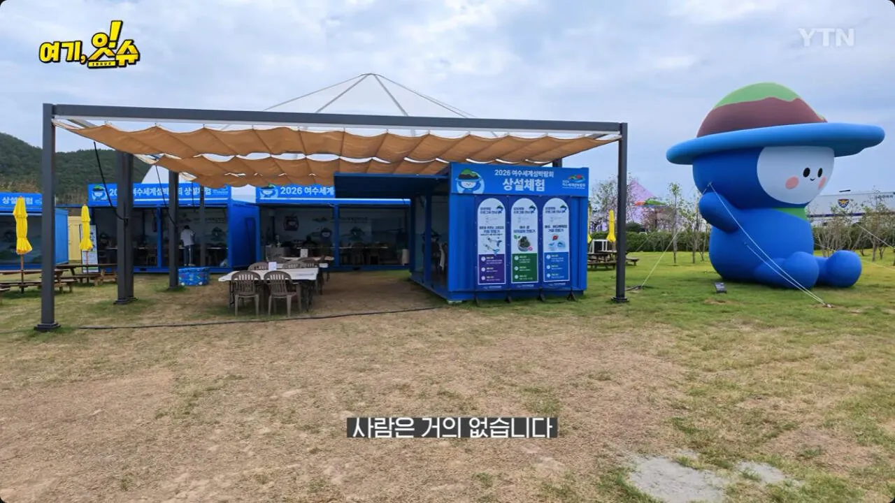
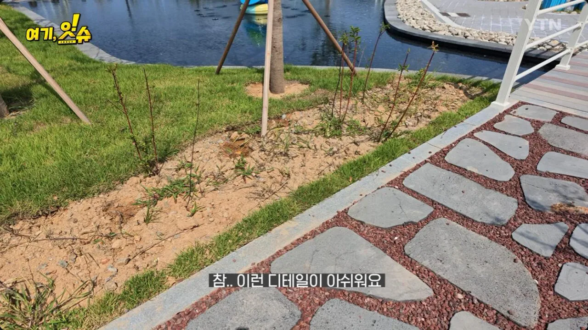
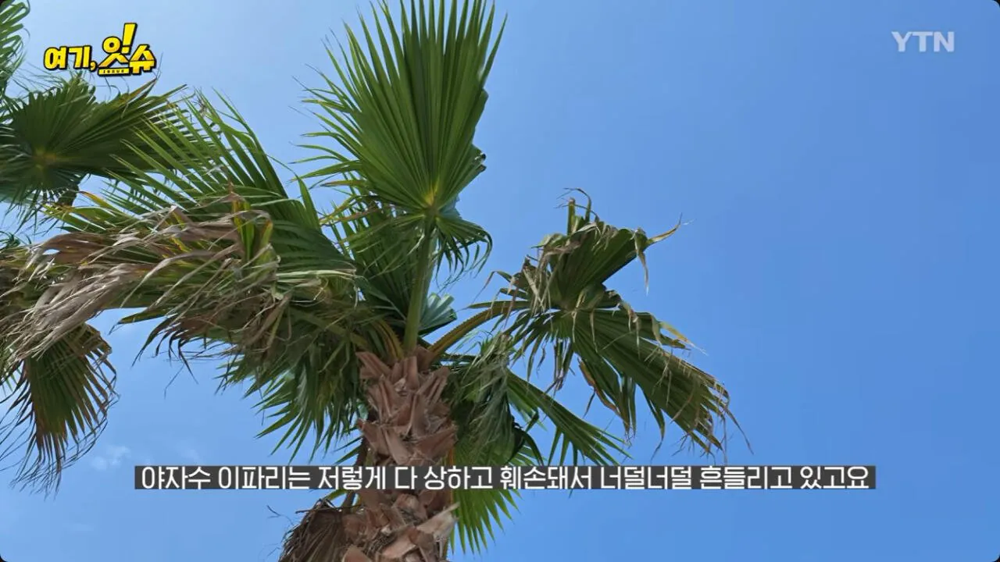
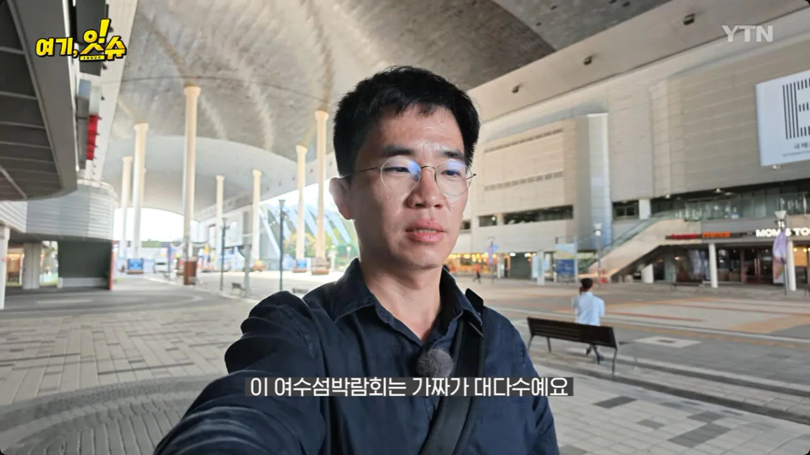
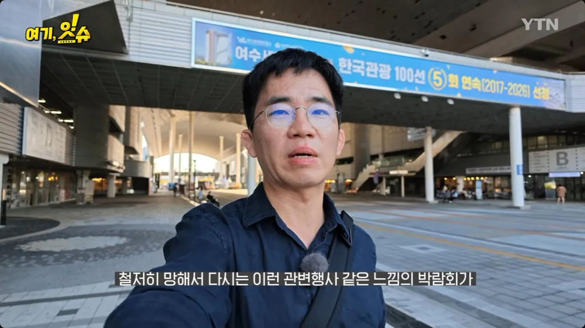
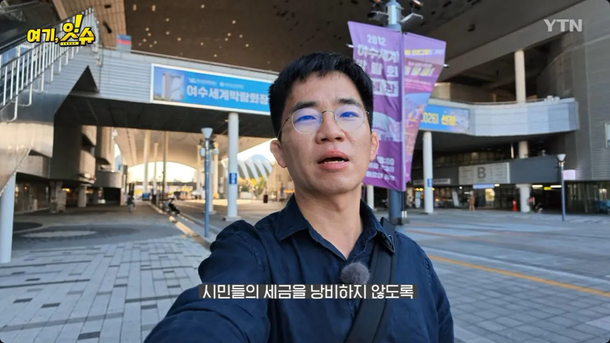

영암 f1....잼버리..






영암 f1....잼버리..
저거는 한번 털기는 해야함
참... 여수 엑스포 시설이 이미 있는데 거기서 정소 활용해서 하지 왜 굳이 새로운 부지에서 할까
부지 조성 비용만 좀 줄여도 이정도는 아닐텐데
그래야 땡겨먹을게 많아지잖아
그래야 해먹지 ㅋㅋ
새로 뭘 지어야 토목공사로 땡겨먹을게 많아지니까
엑스포 시설은 이미 업체들한테 임대된 상태라 쓰기 힘들다던데
엥?? 그래?? 지난번에 갔더니
임대 존나 붙어있고 2층은 못가게 막아놔서 난 뭐 없는 줄
아냐 쓸 수 있음.
다른 행사들도 계속 하고 있음
엑스포 활용못하는건은
국무총리까지 감사하러 와서 지적하고
못쓴다는거 인지하고 넘어감
일단 대부분 민간 임대중이고
생각보다 부지가 크지않음
축제가 성공할지 실패할지는 하늘에 달렸다지만
준비미흡이나... 저정도는 태만이나 유기 수준인데
저런 건 진짜 조사나 수사해야하는데... 그럴리가 없겠지 ㅋㅋㅋ
사실적시 명예훼손이랑 모욕죄 폐지하고 민사로 돌려서, 관계자들 이름 영구 박제한다고 하면 아주 많은 문제가 해결될 수있지..
잼버리때도 별일없던거 생각하면 ㅋㅋㅋ
저런걸 쎄게 처벌해야 다시는 안할텐데
저지역은 뭘 해주면 안된다
전라도는 성역이여
아니 저 꼬라지인데 나라에서 감사할 시도 조차 안하고 있는게 참 아이러니하네
잼버리
섬버리
귤보디아
용어가 점점 늘어난다
저기예산에서 젤잘쓴데가 김선태홍보아닐까
저렇게 기반시설 설치하고 재사용이나 하면 다행인데
잼버리마냥 방치되고 유지비용만 줄줄 새겠지?
자기파벌 친인척들한테 아무것도 안하고 출근해서 쉬다가 퇴근하면 되는 꿀직장들 창출할라면 뭐 어쩔 수 없대
ㅋㅋㅋㅋ 수준
지역욕 안하고 싶어도 맨날 저러니 욕하게됨
사실 뭐 섬박람회 저거만 그런것도 아니고
지방에서 축제나 국제행사 땡겨가서 개판치는거 매번 뉴스가 나오는데..
책임을 안져도 되니까 저러는거 아니냐..
저런 지역행사는 지역이 50% 부담하게해야 지역민들도 남일보듯 못하게해야함 반박시 천사의 섬행
어차피 지방들 다 재정자립도가 낮아서
너가 말한 방식이 의미가 있을까..
이런거 볼떄마다 드는 생각인데
해먹으려면 도대체 어느정도 직급이 되야 콩고물 떨어지는거임?
딱히 본인이 해먹지 않아도 이익 아닌가
의원들 급여 약하지않자나
주말에 가니깐 사람은 많더라
어허 택시기사 탓이라니까
2026 여수세계섬박람회 부진 원인을 택시기사들의 유언비어 탓으로 돌리는 입단속 공문을 보내 논란이 일었으나, 여수시장이 공식 사과했다.
광주는 경기도광주랑 전라도광주 헷갈려서 전라도광주라고 쓴다며
전라도여수는 어디랑헷갈려서 전라도여수라고 쓰는거임?
??뭐가 불편한거임
뭐가이상한건지 모르겠네
살면서 전라도여수라는말을 처음들어봐서 물어보는거임
쟤 건들면 안됨
ㅋㅋㅋ
보통 광역시가 아니면 앞에 ㅇㅇ도 쓰지 않나?
예를들어? 경상도김해 충청도서천 이렇게씀? 난첨보네 경험이 일천해서그런가봄
https://dgmbc.com/NewsArticle/863801
예를 들어 위 기사에도 경북 경산에서 라고 시작하는데?
나도 여수 밤바다 이전엔 여수가 어디에 붙어있는지도 몰랐음
엥 경상도 경산이라고 안하고 왜 경북 경산이라고함? 그럼 같은방식이면 전남 여수라고 해야되지않음? 경북이라는 행정구역은 있는데 전라도라는 행정구역은 없어
노엄
그나마 잼버리는 뭘 해야 되는지는 알고 있었음 제대로 안해서 문제가 된거지 근데 섬박람회는 애초에 기획부터가 대체 뭘 하겠다는건지 알 수가 없음 섬의 미래 어쩌고 하는데 걍 예산 빼먹기 사업들이 하는 전형적인 두루뭉실한 주제임
저래도 되니까 그러는건데 뭐가 문제지?
입김이 너무 쌔서 불가침 영역임
입김보다 법이 쌔지 안을까… 물론 수사 의지도 없어보임
대충 술멕이고 쉬쉬하면 된다고 생각할듯
후기만 보면 지방축제 약간 상위호환같던데 무슨 자신감으로 세계섬~ 이라는 타이틀 달고 개장한거냐 이거
누가 그랬는제 지금 6공화국 모태가 전라도라서 전라도에서 저렇게 세금 슈킹치게끔 효용성 없는 국비 사업 내려주고 그러는건 원로들 용돈 챙겨주는 개념이라 걍 그러려니 해야한다고
애초에 '섬 박람회'가 뭐냐? 이름부터 냄새가 나는데 이걸 기획하고 허가해준 놈들을 조져야함
어설프게 우리도 어디처럼 엑스포 박람회 무슨무슨 회의 유치하자고 난리인데 제발 하지말길
이건 차라리 국가 단위나 적어도 광역시나 도 단위에서 결제하고 처리해야함.
적어도 걔들 혼자 총대메고 하면 그나마 나은데 단순 '시'나 '군'이 끼면 규모가 문제가 아니라 인식이 80년대 수준이더라
문제는 그거임 들어가는 예산 규모에 비하면 인력이 너무너무너무 적은 수준임 그러면 외주 필수로 해야하고 슈킹 엄청 생기고
잼버리때 저지랄 해 놓고 또 이지랄 하면 ,, 다음에도 개지랄 할 확률 졸라 높음.
그냥 저런 건수 자체를 주면 안됨...